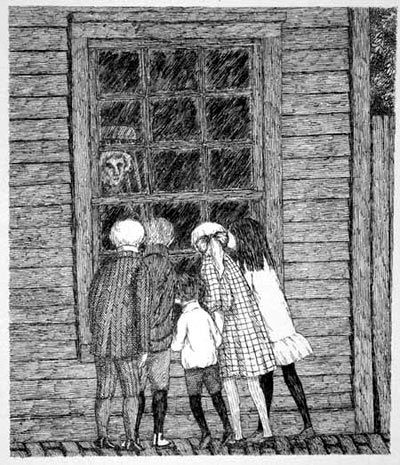

-
Fan Friendly: Theroux’s Gorey
by Caroline Bankoff May 7, 2011
Ideally, friendship is based on mutual admiration, while the relationship between fan and artist is more asymmetrical. To be a fan of a friend is not unlike having a crush: somebody always ends up splitting the difference, although there’s always a chance that unrequited love might become mutual. But talent and specialness can’t be conferred through contact, and the validation of being close to a person one admires is easily undermined by the impossibility of reciprocity. One party has given the other something that can’t be responded to in kind, and so the latter lives with a sense of indebtedness and of being, on some level, replaceable. The anxiety only increases in the presence of celebrity.
Critic and novelist Alexander Theroux’s The Strange Case of Edward Gorey, an expanded reissue of a briefer volume, is part biography, part memoir, and part paean to the illustrator, a longtime friend, who died of a heart attack in 2000. It’s disorganized, digressive, and intimate, though not in the sense usually applied to this kind of book. Which is to say that there’s a lot of information about Edward Gorey, but the character the reader gets to know best is Theroux. Though charming, Gorey was cagey and remote and, true to the title, Strange Case reads as a kind of investigation, with the anecdotes and habits and tastes laid out to be examined and speculated over. It’s a record of its author’s after-the-fact attempt to quantify his closeness to a man whose art and personality he adored, and who in both life and death managed to keep largely, and frustratingly, to himself.

A cult figure known for his intricate, unsettling illustrations, sometimes accompanied by similarly black-humored stories and poetry, Gorey abandoned New York City to live year round at his home in Yarmouth Port, Massachusetts, where Theroux was a neighbor. There he lived as a semi-recluse, spending the majority of his time at home working or doing domestic chores. He was vague about his sexuality, and his romantic attachments seemed to be nonexistent. He rarely left Cape Cod and, though he made appearances at local dinner parties and eateries, he was generally reluctant to engage with the world outside of a small circle of family members and friends. The doors to his house literally lacked knobs. When the telephone rang in the presence of one of his few visitors, he instructed them to tell the caller he was not there. (“Certain friends,” it is noted, could usually reach him by letting it ring once, hanging up, and then calling back.) He cultivated an eccentric appearance, wearing full-length fur coats, fistfuls of iron rings, and Keds sneakers — a look, Theroux suggests, intended to announce, “I am not at all like you.” “Was it that he wished to be seen,” the writer speculates, “and not understood?”
The author, for his part, was not content to simply see, though he sympathizes with Gorey’s desire to keep others out: “Why should [Gorey] have answered doors or phones?” he demands. “To appease the herd, the hoi polloi, the guttercats and vulgarians of Glickfair, as in What Makes Sammy Run? Let’s face it, most people are bores and tiresome beyond words, and Gorey had a low threshold for the usual, the flat, the common, the typical, and the predictable.” On the other hand, Theroux is “convinced that [Gorey] needed attention more than he would have admitted.” After all, he “failed as a recluse” by publicly listing his number in the phone book and, once spotted, he was not one to turn people away: “‘We’ve got a customer,’ I have heard him say with a sing-song lilt on the first syllable whenever a fan, an avid reader, or some Gorey groupie or other would appear on his front porch or stop to stand in front of his house. I later learned it was the term Garbo used regarding her own importunate movie fans.” The dismissal of these admirers continues throughout the book, and reads as less a protective instinct than a possessive one for Theroux’s part. Of Gorey’s home at 8 Strawberry Lane, which has since been turned into a museum, Theroux writes, “I try to stay away from the Gorey House for no other reason than I find it unsettling to find the rooms mausoleumized to a degree and to find a friend raised after death to a Very Exalted Personage.”
And yet, Strange Case is a monument to its subject. Theroux frequently quotes poetry as epitaph, he makes comparisons to everyone from Andrew Wyeth to W.H. Auden, there are indignant refusals of critics, and also records of the (increasingly high) prices of first editions and memorabilia. He has a particular fondness for long lists of Gorey’s likes and dislikes; he makes catalogues of his favorite movies, hobbies, esoteric decorations and collections so lengthy and numerous that the reader begins to scan or skip them. They seem intended to function as evidence, hard proof of inside knowledge. To watch the masses wander the rooms Theroux so lovingly inventoried appears — at least to him — to discount the value of his access. A house full of Gorey’s objects — Celtic crosses and stuffed animals and magnets and masks and cheese graters and books and “chunks of architecture” — meets everyone, including the author, with the same silence. Though Theroux knew Gorey’s home before it was Gorey House, he remains poignantly insecure about their relationship, and the ebbs and flows of his confidence play out on the page.
Theroux admits that, “most of the time whenever I visited Gorey I felt I was disturbing him.” On the other hand, he is eager to highlight signs of special favor: “I believe I can say he liked my books,” he writes, “and even found a lot of my theories cogent and, one would like to think, even compelling. I remember that he agreed with me that there are four distinct sexes: men, women, gays, and female singers — a grouping all of their own as far as vain, tempestuous divas go.” On the next page, he explains: “I mention this because whenever I did air one of my theories (and there were and are many) Gorey always registered his smirking approval with a bout of exaggerated applause — slow steady hand-clapping — and the comically deflating, ‘Now shall we have a rum shrub.’” This is self-deprecation as preemption, the notion that making the joke about oneself before anyone else does is to come out ahead. Of course, it also calls attention to things that may well have been glossed over, particularly when, as in the case of a memoir, the author is the sole source of information.
The reluctance to bask in Gorey’s compliments betrays Theroux’s anxiety about drawing attention to the unevenness between them. But it still finds its way to the surface: “Only once or twice can I say that he actually wounded me,” Theroux recalls. “‘Sycophant,’ [Gorey] once frostily muttered when I asked him to inscribe one of his own posters (which he did) for another illustrious cartoonist, who, let me add here, had badgered me for it. Gorey thought it was unctuous of me, I gather, to be fertilizing one flower with another.” Though these recollections are quickly explained away, it’s impossible to miss the sting: “What was sadly distressing about Gorey’s arch disapproval,” he writes, “was that, being so rare, it seemed so accurate and so true.”
As Theroux once warned a journalist, Gorey was allergic to flattery. Of that writer’s subsequent interview, he recalls: “The predictable result of course was that the interviewer proceeded immediately to ignore my advice and in the most ham-handed way to dump a truckload of blandishments on Gorey’s head. An agitated Gorey sealed up like a clam … I believe that over a lifetime he had been served up a lot of such jelly omelets.” Strange Case is certainly something more substantial that a jelly omelet, if only because Theroux is nothing if not genuine in his admiration: “I have noticed all my life that those the press, the people, the planet ignores tend to be its most profound inhabitants, and that, sadly, those taken up, pampered, and praised are mainly hustlers, churls, opportunists. It was not that Gorey cared one way or other. About much he showed general sowhatsmanship, and shrugging frequently, was unconcerned about things he found do not count, like predictable attitudes and sententious people and pragmatic conversation.”
Gorey may not have cared about his popular recognition, but Theroux certainly does. Unable to fully embrace the man (and free of the prospect of his disapproval), he might devote himself to the legacy. But then, in the final pages, there’s this: “Except for my own dear father, I honestly think I can say that I miss Edward Gorey more than anyone else I have known who has passed away.” The project isn’t a meditation on a career or a personality; it’s an effort to make sense of the loss of an individual. To make this process compelling to others is difficult, and Theroux doesn’t quite manage to pull it off, with attention to his readers often seeming like an afterthought. In that regard, Strange Case resembles listening in on a grief-counseling session in which the patient is engaged in an “empty chair” exercise. Visualizing the deceased seated across from her, the mourner is instructed to say whatever she feels went unsaid, to ask whatever went unasked. Afterward, she switches spots, responding to her own inquisitions from the perspective of the departed. The process serves as an apt metaphor: When we speak to the dead, we are really just speaking to ourselves.